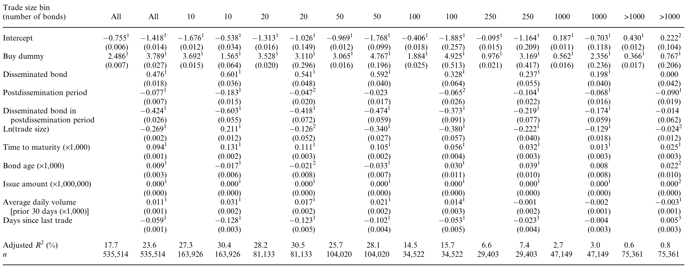
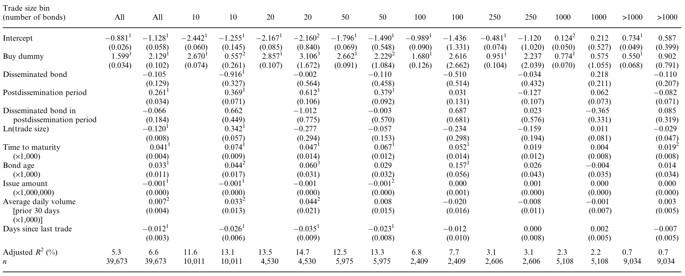
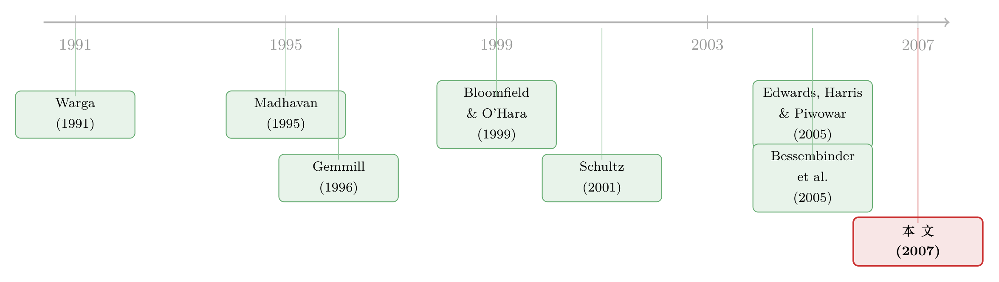

掀开交易商的「桌布」：一场被监管钦定的公司债透明度实验
本文读的是 Goldstein, Hotchkiss & Sirri (2007, Review of Financial Studies)：他们受 NASD 委托，亲手设计了一场真正意义上的随机实验——把一批 BBB 级公司债的成交信息公开出来（事后透明），再和精心匹配的「不公开」对照组逐一对比。结论与许多交易商的担忧相反：增加透明度对流动性要么中性、要么有益。对小额与中等规模的交易，公开成交的债券价差比对照组多降了 22–38 个基点；但对交易最稀少的那批债券、以及最大额的交易，透明度几乎没有影响。
1 一个让交易商害怕的问题
先说一个反直觉的担忧。
设想你是一位公司债做市商 (market maker)。一位客户刚刚把一大笔债券甩给了你，现在这笔头寸正烫手地压在你的账上，你急着把它转手出去。在一个不透明的市场里，没人知道你刚刚以什么价格吃进了多少货，于是你可以从容地、不动声色地把它分批卖掉。可一旦市场变得「事后透明」——也就是每一笔成交的价格和数量都被即时公之于众——情况就变了：交易对手们都看得见你手里压着货、看得见你急于出清，于是在和你讨价还价时，他们就有了筹码。你不得不为这份「被看穿」的风险收一笔溢价。
按这个逻辑，透明度反而会让价差变宽、让流动性变差。这并不是杞人忧天。2002 年 NASD 推出公司债成交申报系统 (Trade Reporting and Compliance Engine, TRACE) 时，监管者和不少市场参与者就真的担心：把那些评级较低、规模较小、交易稀少的债券的成交价晒到阳光下，可能会把仅有的一点流动性也吓跑。正因如此，TRACE 上线之初只对评级在 BBB 以上、且发行规模超过 $1 billion 的投资级债券公开成交信息；其余债券的公开，要等一系列研究评估完透明度的影响之后再分批推进。
但反过来想，透明也可能是好事。更多的成交信息能降低逆向选择 (adverse selection)，把原本不敢入场的「不知情」投资者吸引进来；散户和买方机构一旦能看到更广泛的成交价格，就能在和交易商谈判时争取到更好的价钱。
于是问题变成了一个理论上彻底没有定论的悬案。Madhavan (1995)、Pagano and Roell (1996)、Naik, Neuberger and Viswanathan (1999) 都指出：透明度对流动性的影响在理论上是模糊的（ambiguous）——它同时压低逆向选择成本、又抬高做市商的存货风险溢价，两股力量方向相反，谁占上风只能靠数据说话。可偏偏，现实中几乎找不到一个能干净地观察「透明度发生变化」的场景。
这正是本文的机会所在。
2 一场真正的「实验」：识别策略
读经验金融的人，最常感叹的一句话是「要是能做随机实验就好了」。绝大多数时候我们只能退而求其次，用工具变量、断点、双重差分去近似一个反事实。而这篇文章的核心魅力，恰恰在于它不是近似，而是一场被监管机构钦定、由作者亲手设计的随机对照实验。
事情是这样的。根据 Federal Register (2002, 2003) 的记录，NASD 被要求请几位独立经济学家——也就是本文的三位作者——来设计一个实验，检验透明度对公司债流动性的真实影响。他们用 2002 年 7 月到 2003 年 1 月这段「选择期」(selection period) 内的非公开 TRACE 成交数据，挑出了一批 BBB 级债券，随后由 NASD 在 2003 年 4 月 14 日正式开始公开这些债券的成交信息。
但真正关键的一步在于怎么挑。作者先按行业、交易活跃度（日均成交笔数）、债券年龄、到期期限，把活跃债券两两配成 90 对。每一对里，随机指定一只去「公开」，另一只留作「不公开」的匹配对照 (matching control)。这一步随机化，是整个识别策略的灵魂——它意味着公开组和对照组在透明度之外的一切特征上事前都是可比的，于是公开前后两组之差的「差」，就可以干净地归因于透明度本身。
这本质上就是一个双重差分 (difference-in-differences, DiD)：对每只公开债券，先算它自己在「透明前 vs. 透明后」的变化，再减去对照债券同期的变化，剩下的就是透明度的净效应。文中把它直白地称作「difference of differences」。
这场实验还有一个常被忽略的细节。作者起初被授权只挑 90 只债券，但他们意识到，若把太多「极少交易」的债券塞进这 90 只里，会稀释检验的统计功效；于是他们主动向监管者申请，额外增加一组 30 只交易极稀疏的债券一并公开。这 30 只后来讲出了和 90 只完全不同的故事——这一点先按下不表。
对于不便逐一配对的情形，作者还构造了两个更宽的对照组合：给 90 只活跃债券配了一个 2997 只债券的「不公开对照组合」（其日均成交笔数落在 90 只公开债券的最小值 0.2105 到最大值 24.8 之间），给 30 只稀疏债券配了一个 1704 只的对照组合。匹配法和组合法各有利弊——匹配法干净但结果可能对样本选择敏感，组合法样本大但纳入了更多「不太像」的债券（这一点 Davies and Kim (2004) 专门讨论过）——所以作者两种都用，互为稳健性检验。
3 数据：一个比想象中更「冷清」的市场
样本是 2002 年 7 月 8 日到 2004 年 2 月 27 日全部 4888 只 BBB 级公司债的二级市场成交，发行规模介于 $10 million 与 $1 billion 之间。观测单位是逐笔成交。剔除了可转债、银行发行的债券、含特殊条款的债券、新发行不满的债券，以及剩余期限不足一年的债券。NASD (2004) 估计 99.9% 的交易都走场外、因而都进了 TRACE 数据——覆盖度近乎全样本。
值得先停下来看一眼这个市场有多「冷清」。4888 只 BBB 债券里，平均每只债券每天只成交 1.4 笔；在将近四分之三的样本日里，一只债券根本没有任何成交；两次成交之间平均要隔约 15 天（中位数 7.3 天）。交易还呈时间上的「成簇」分布——很可能是因为交易商不愿在稀薄的债券上压存货，一旦从客户手里买进就急着卖出。
理解这个「极度不活跃」的底色很重要，因为它正是后文那个非线性结论的根源。顺便一提，BBB 债券在这段时期占了 TRACE 全部成交笔数的 37%、面额的 33%，绝非边角料。（关于公司债流动性「该怎么量」这件事本身，可参见《把「成交价」从「成交量」里解放出来——重新丈量公司债的流动性》。）
4 先看成交量：透明并没有把人吸引来
如果透明度真能降低逆向选择、把更多投资者请进场，那么最直接的预期就是：公开后的债券，成交应该更活跃。
作者先检验这一条。结果是个干脆的「没有」。从不透明期到透明期，公开债券和不公开债券的日均成交量双双下滑了大约 30%–40%，幅度在统计上和经济上都不小。但一旦做差中差——用对照组的下滑去校正公开组的下滑——几乎所有的「差中差」都不显著。换句话说，这场成交量的退潮是全市场性的，和透明度无关。一个有力的旁证是：那些发行规模超过 $1 billion、本就全程透明、被排除在主分析之外的大盘 BBB 债券，同期成交量也在下滑。透明度并没有给任何一组带来相对意义上的「增量交易兴趣」。
这里有一个容易混淆的地方：成交量没增加，并不意味着透明度没用。它只是说明，透明度的好处不是体现在「把更多人吸引来交易」这条路径上。真正的好处藏在价格里——藏在每一笔成交的成本里。
5 价差去哪了：两把尺子量同一件事
那就去量价差。可问题来了：公司债市场没有事前报价数据——你看不到一张挂在那里的买卖盘口。怎么估买卖价差 (bid-ask spread)？
作者用了两把尺子，互相印证。
第一把尺子：交易商往返 (dealer round-trip, DRT)。 思路朴素得近乎优雅：找出「同一个交易商，先从一位客户手里买进某只债券，又在限定时间内把这只债券卖给另一位客户」的成对成交，那么卖价减买价，就是这一趟往返里客户实际承担的双边交易成本。这个做法接近 Green, Hollifield and Schurhoff (2004) 与 Biais and Green (2005) 在市政债上的方法，但本文的数据多了一项利器——它用匿名代码标识了每一个具体的交易商，于是「同一个交易商的一买一卖」可以被精确地拼起来。它最大的好处是：不依赖任何外部数据、也不依赖任何估价模型，简单到可以直接解读。
用 DRT 量出来的全样本图景是：对一日内完成的往返，规模在 10 张债券以内的小额交易，价差平均高达 $2.35（中位数 $2.25，每 $100 面值）；而对 1000 张以上的大额交易，成本骤降到 $0.50（中位数 $0.31）。规模越大、单位成本越低——这与 Schultz (2001) 报告的大额交易 27 个基点的估计相当吻合。
第二把尺子：回归法。 沿用 Warga (1991) 与 Schultz (2001) 的思路，把「成交价」与「前一日由 Reuters 报出的估计买价」之差，对成交规模分组、以及透明度指示变量做回归，从而把透明度的净效应从全市场变动里剥离出来。它动用了全部成交数据，能处理 DRT 法因样本太少而够不着的角落（尤其是那 30 只稀疏债券），代价是估计值会被一些更极端的观测拉高。
两把尺子，指向同一个结论。
6 谁受益、谁没有：藏在「非线性」里的真贡献
如果故事到「价差降了」就结束，那它无非是又一篇说「透明度有益」的文章。本文真正立得住的地方，在于它把这个效应沿两个维度切开了——成交规模，和交易活跃度——并发现效应高度非线性。
先看成交规模这条轴。对那 90 只活跃的公开债券，回归法显示：透明度带来的额外降幅，在最小额交易（≤10 张）上最大，达到 60 个基点（每 $100 面值）；到「至多 1000 张」的交易，降幅收窄到 17.4 个基点；而对超过 1000 张的大额交易，效应不再显著。用更直接的 DRT 法、并在横截面上控制了其他影响价差的债券特征后，公开债券的价差最大降幅出现在中等规模交易上，达到 67 个基点。把对照组的同期变化扣掉后，对 101–250 张这一档交易，90 只公开债券的价差比对照组多降了 38 或 22 个基点（取决于估计方法）。

Table 9: reports the regression-based spread estimates for all principal
为什么大额交易没有受益？回到开篇那位手里压着货的做市商——正是在大宗交易上，做市商的存货风险溢价最高，透明带来的「被看穿」成本也最重，两股力量在大额端相互抵消。而在小额、中额交易上，逆向选择的下降占了上风：投资者一旦能看到更广的成交价，就能在谈判桌上争回几十个基点。这正是作者强调的机制——透明度的红利，来自投资者议价能力的提升。
再看交易活跃度这条轴，反转就出现在这里。那额外申请来的 30 只交易极稀疏的债券，无论整体还是分任何一档成交规模，透明度的效应都不显著。

Table 10: reports a similar set of regressions for the additional 30 Downloaded
这是个相当克制、也相当诚实的结论：透明度的好处不是普适的。对一个一两周才成交一次的债券，公开它的历史成交价帮不上忙——因为那点零星的成交本身就没什么信息含量，投资者也无从凭它去议价。换句话说，监管者当初最担心会「受伤」的那批最不活跃的债券，结果既没受伤、也没受益，是真正的「中性」。把全图拼起来：对绝大多数交易，透明度有益；对最稀疏的债券和最大额的交易，透明度中性——没有一处证据支持「透明会损害流动性」这个最初的恐惧。
这也解释了本文与同期两篇相关研究的分工。Edwards, Harris and Piwowar (2005) 用 TRACE 数据拟合个券的交易成本时序模型，再做横截面回归，得出透明度让所有评级债券的价差整体下降约 10 个基点；Bessembinder, Maxwell and Venkataraman (2005) 用保险公司向 NAIC 申报的大额交易数据，估出 12–14 个基点的往返成本下降。这两篇都聚焦于交易成本的横截面决定因素，且它们的「公开样本」是发行规模超 $1 billion 的大盘债和 50 只延续自 FIPS 的高收益债。而 BBB 市场是唯一一个可以同时观察到「同评级、同规模、同活跃度、却一部分公开一部分不公开」的市场——本文的独特之处，正是抓住了这块只属于 BBB 的实验田，把透明度的非线性效应干净地分离了出来。
7 文献脉络
把镜头拉远，这篇文章站在一条清晰的脉络上。
最初，问题是理论的：透明度到底利好还是利空流动性？Madhavan (1995) 与 Pagano and Roell (1996) 把它形式化，给出了「视情况而定」的答案——透明既压低逆向选择，又改变做市商供给流动性的经济学。Naik, Neuberger and Viswanathan (1999) 进一步在「协商交易」的市场里刻画了交易披露规则的福利后果。Bloomfield and O'Hara (1999) 则在实验室里给出了一个微妙的发现：事后透明度增强后，开盘价差更宽、但随后的价差更窄——透明的代价和红利出现在不同时刻。

接着，问题转向经验：可现实里几乎没有干净的透明度变更可供观察。一个著名的例外是 Gemmill (1996)，他研究伦敦证交所大宗交易披露延迟规则的变化，发现拉长披露延迟并未影响交易商价差——但那个市场从未完全取消事后透明，且还存在事前透明，与本文的设定相去甚远。与此同时，量价差的方法学也在积累：Warga (1991) 用前一日估计买价做基准，Schultz (2001) 揭开了公司债交易成本的「幕布」，给出 27 个基点的大额交易估计。
然后，TRACE 在 2002 年降临，第一次为这个问题提供了大样本、可控的舞台。Edwards, Harris and Piwowar (2005) 和 Bessembinder, Maxwell and Venkataraman (2005) 几乎同时从横截面角度切入。而本文所处的位置，是这三篇里唯一一篇拿着随机化实验设计、专门在 BBB 这块同质市场上做差中差的——它不回答「哪些债券交易成本高」，它回答「把透明度这一个变量拨动一下，会发生什么」。
（这条「公开交易信息会如何改变市场」的主线，至今仍在延续。一个现代的对照是《短卖单不再是「先知」：当做空数据被实时公开之后》——同样是把原本私密的交易信息晒到阳光下，结论却走向了另一个方向，值得对照着读。）
8 评论与延伸（Q&A + 研究方向）
(a) 几个可能的疑问
Q：既然是随机实验，为什么还要费力构造对照组合、还要做横截面回归？
因为随机只保证了 90 只配对在事前可比，并不能消除「实验期内的全市场冲击」。成交量那 30%–40% 的下滑就是个活生生的例子——它来自全市场，必须用对照组的同期变化扣掉，剩下的差中差才是透明度的净效应。横截面回归则进一步控制了发行规模、期限、年龄等影响价差的债券特征，是对匹配法的稳健性背书。
Q：DRT 法只看「一日内、同一交易商的一买一卖」，会不会选到一批特殊的、最好做的交易，从而低估了真实价差？
这是个真实的隐忧——能在一天内拼成往返的，往往是流动性较好的交易。但作者用回归法做了交叉验证：回归法动用全部成交、且因极端观测更多而估值偏高，两把尺子方向一致，结论才站得住。DRT 的长处不在「无偏」，而在「不依赖任何模型假设」，可以当作一根干净的标尺。
Q：成交量没增加，是不是说明透明度其实没起作用？
不能这么推。成交量与价差是流动性的两个不同侧面。本文的发现恰恰是：透明度的红利不走「吸引增量交易」这条路，而是直接体现在既有交易的执行成本下降上。量没变、价更优，本身就是一个内部一致的故事。
Q：那 30 只稀疏债券「没效果」，会不会只是样本太小、检验没功效，而非真的没效应？
这正是作者一开始就警惕、并主动多要 30 只债券去缓解的问题。但他们对这 30 只用的是大样本的回归法（配
1704只对照组合），而非样本稀少的 DRT 法，正是为了把功效尽量提上来。在这种设定下仍然查不到任何一档的显著效应，更可能反映「极稀疏债券的历史成交价信息含量太低、无从据以议价」这一经济实质，而非纯粹的统计噪声。
Q：本文结论能外推到高收益债、或评级更低的债券吗？
要谨慎。监管者当初分批公开的逻辑，正是认定高评级、大发行的债券「信息不敏感、替代品多」，与低评级、小发行的债券行为不同。本文只在 BBB 这一评级带内做了实验，对更低评级（信息更敏感、逆向选择更重）的债券，透明度的净效应方向完全可能不同——这恰恰是 TRACE 分阶段推进所要回答的下一个问题。
Q：这和后来 COVID 危机里的公司债流动性研究是什么关系？
本文量的是「常态下、制度性透明度变更」的长期效应；危机研究量的是「极端冲击下、流动性骤然蒸发」的短期动态。两者互补：前者说明透明度在平时压低了交易成本，后者（如《差点死掉的那个市场：一场公司债流动性危机的微观解剖》）提醒我们，这层透明度在做市商资产负债表绷紧时未必还能托住价差。
(b) 几个可能的研究问题与提案
1. 外资持有人与透明度红利的异质性。 【经济故事】本文发现透明度的红利来自投资者议价能力的提升。那么一个自然的猜想是：信息劣势越大的投资者，受益越多。境外投资者通常对本地市场的成交价格了解最少——透明度对他们的「赋能」是否最强？这能把「透明度有益」这一总量结论，拆解到投资者类型层面。 【可行性】中。需要把 TRACE（或 enhanced TRACE 带交易商/客户标识）与持有人信息（如 NAIC 保险公司、13F、或托管层数据）匹配，识别上可沿用本文的 DiD 框架，按持有人国别分组。难点在于持有人与逐笔成交的精确对接。
2. 透明度对一级市场定价的回溢。 【经济故事】二级市场更透明后，承销商和发行人对新债的定价会不会更准、新债折价 (underpricing) 会不会缩小？议价能力的天平一旦在二级市场倾斜，理应回溢到一级市场。 【可行性】高。可用 TRACE 分阶段公开的时间差作为冲击，比较「二级已透明 vs. 未透明」债券的新发折价（参见《新债上市第一笔成交，凭什么白赚 47 个基点？》的度量思路）。数据齐备，识别清晰。
3. 大额交易为何「免疫」：做市商存货渠道的直接检验。 【经济故事】本文推测大额交易没受益，是因为做市商存货风险溢价抵消了逆向选择的下降。这个机制可以被直接检验：透明后，做市商在大宗成交后的存货持有时间、再平衡速度是否变化？ 【可行性】中。需要带交易商匿名码的逐笔数据（本文已用过同类数据），重建每个交易商的存货轨迹。识别可比较公开前后大额成交后的存货消化速度。数据可得性是主要约束。
4. 把实验「续播」到更低评级。 【经济故事】TRACE 是分阶段公开的，BBB 之后还有更低评级、更小规模的债券陆续被纳入。对信息更敏感的低评级债券，透明度的净效应方向是否会反转？这直接检验本文「中性或有益」结论的边界。 【可行性】高。TRACE 的分阶段时间表本身就是一连串准实验，文献中已有现成的公开日期。沿用本文 DiD，按评级带分层即可。
5. 透明度与危机中的流动性韧性。 【经济故事】常态下透明度压低了价差，但在做市商资产负债表受限时，这层透明会不会反而放大了「被看穿」的脆弱性？把本文的横截面透明度变异，和后续危机期的价差跳升对接起来。 【可行性】中。需要把债券按「进入 TRACE 公开的早晚/批次」分组，在 2008 或 2020 危机窗口比较其价差韧性。识别上要小心公开批次与债券特征的相关性，可用倾向得分或本文式的匹配缓解。
我的判断
这是一篇方法上几乎无可挑剔的文章，它的稀缺性在于「真随机」。在经验金融里，能拿到一个由研究者亲手设计、监管者强制执行的随机对照实验，是可遇不可求的——这让它的因果结论比同期那两篇横截面研究都更硬。它的克制同样可贵：没有把「透明度有益」喊成一句普适口号，而是诚实地标出了它失效的两个角落（最大额交易、最稀疏债券），并给出了一个内部一致的存货—逆向选择机制去解释这种非线性。
对识别，我有两点保留。其一，匹配只在 90 只活跃债券上做到了随机，而 30 只稀疏债券和两个宽对照组合都不是随机的，那部分结论的可信度要打个折——好在它们恰好是「无效应」的那一组，方向上不至于误导。其二，实验窗口里那场全市场的成交量退潮提醒我们，透明度的效应是被叠加在一个剧烈变动的宏观背景上估出来的；差中差能扣掉水平的共同冲击，但若透明度与某种趋势性冲击交互，残差里仍可能有偏。
我最想看到的后续，是把这套实验逻辑推到更低评级、以及推到不同类型的持有人身上——尤其是信息最弱势的境外投资者。本文证明了「让投资者看见价格」能压低交易成本；下一个问题是，这份红利究竟落进了谁的口袋。
参考文献
- Bessembinder, H., W. Maxwell, and K. Venkataraman (2005). Optimal Market Transparency: Evidence from the Initiation of Trade Reporting in Corporate Bonds. Journal of Financial Economics (forthcoming).
- Biais, B., and R. Green (2005). The Microstructure of the Bond Market in the 20th Century. Working paper, Toulouse University and Carnegie Mellon University.
- Bloomfield, R., and M. O'Hara (1999). Market Transparency: Who Wins and Who Loses? Review of Financial Studies 12(1), 5–35.
- Davies, R., and S. Kim (2004). Using Matched Samples to Test for Differences in Trade Execution Costs. Working paper, Babson College.
- Edwards, A., L. Harris, and M. Piwowar (2005). Corporate Bond Market Transparency and Transactions Cost. Journal of Finance (forthcoming).
- Gemmill, G. (1996). Transparency and Liquidity: A Study of Block Trades on the London Stock Exchange Under Different Publication Rules. Journal of Finance 51(5), 1765–1790.
- Goldstein, M. A., E. S. Hotchkiss, and E. R. Sirri (2007). Transparency and Liquidity: A Controlled Experiment on Corporate Bonds. Review of Financial Studies 20(2), 235–273.
- Green, R., B. Hollifield, and N. Schurhoff (2004). Financial Intermediation and the Costs of Trading in an Opaque Market. Working paper, Carnegie Mellon University.
- Madhavan, A. (1995). Consolidation, Fragmentation, and the Disclosure of Trading Information. Review of Financial Studies 8(3), 579–603.
- Naik, N., A. Neuberger, and S. Viswanathan (1999). Trade Disclosure Regulation in Markets with Negotiated Trades. Review of Financial Studies 12(4), 873–900.
- Pagano, M., and A. Roell (1996). Transparency and Liquidity: A Comparison of Auction and Dealer Markets with Informed Trading. Journal of Finance 51(2), 579–611.
- Schultz, P. (2001). Corporate Bond Trading Costs And Practices: A Peek Behind the Curtain. Journal of Finance 56(2), 677–698.
- Warga, A. (1991). Corporate Bond Price Discrepancies in the Dealer and Exchange Markets. Journal of Fixed Income 1(3), 7–16.